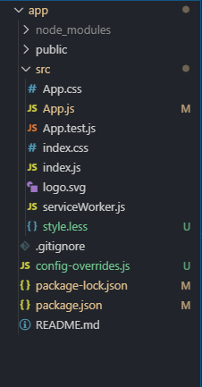

3.3. antd修改主题颜色及公用部分¶
3.3.1. 安装插件¶
- 插件解释
- antd antd组件库
- react-app-rewired 设置一个对create-reat-app脚手架进行自定义配置的社区解决方案
- customize-cra 这个是为了能够使用react-app-rewired@2.x而需要的插件
- babel-plugin-import 这个是按需加载组件代码和样式的Babel插件，可以很好的解决前端的性能问题
- less & less-loader 使用less文件必须要的
//安装一下需要的插件
yarn add antd react-app-rewired customize-cra babel-plugin-import less less-loader
or
npm add antd react-app-rewired customize-cra babel-plugin-import less less-loader
3.3.2. 更改package.json文件¶
很简单，只需要将
"scripts": {
"start": "react-scripts start",
"build": "react-scripts build",
"test": "react-scripts test",
}
更改为：
"scripts": {
"start": "react-app-rewired start",
"build": "react-app-rewired build",
"test": "react-app-rewired test",
}
就可以了
3.3.3. 创建config-overrides.js文件¶
首先在根目录下创建一个叫做config-overrides.js的文件，然后在里面填入：
const { override, fixBabelImports, addLessLoader } = require('customize-cra');
module.exports = override(
//写了下面这个部分，就实现了按需加载，再也不需要再每个页面里面都引入“antd/dist/antd.css”了
fixBabelImports('import', {
libraryName: 'antd',
libraryDirectory: 'es',
style: true //这里一定要写true，css和less都不行
}),
addLessLoader({
javascriptEnabled: true,
})
)
3.3.4. 创建一个less文件¶
这个less文件用来覆盖原有的antd样式，里面的内容可以写为：
//引入原有的antd样式
@import '~antd/dist/antd.less';
//对原有的样式进行覆盖（这里只覆盖了主要颜色，可以加入更多）
@primary-color: #f00;
3.3.5. 引入less文件¶
在react项目中的App.js文件中引入第四步创建的less文件
import './style.less';
至此就实现了更改antd主题颜色及公用部分，下面贴上项目结构图（新项目）：
